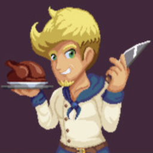
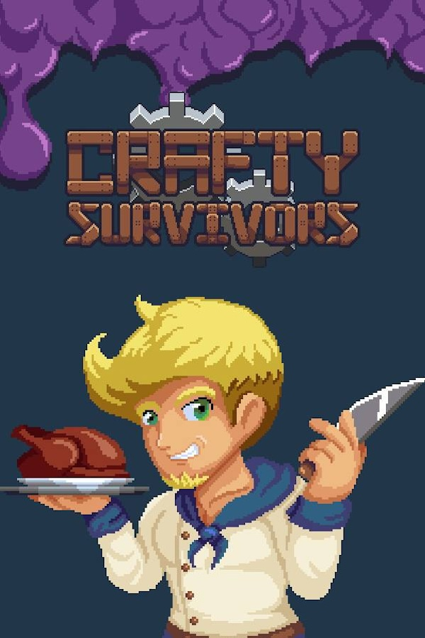

 Crafty Survivors
Details
|  | |
| Playtime | 2h 14m 0s |
| Last Activity | 18/06/2024 22:56:00 |
| Added | 5/06/2025 3:25:11 |
| Modified | 7/06/2025 19:52:45 |
| Completion Status | In Progress |
| Library | Steam |
| Source | Steam |
| Platform | Macintosh PC (Windows) |
| Release Date | |
| Community Score | |
| Critic Score | |
| User Score | |
| Genre | Action |
| Developer | |
| Publisher | |
| Feature | Achievements Cloud Saves Family Sharing Full Controller Support Single-Player |
| Links | Community Hub Discussions Guides News Store Page PCGamingWiki Achievements |
| Tag | 2D Action Action Roguelike Action RPG Arcade Bullet Hell Colorful Controller Crafting Fantasy Medieval Pixel Graphics Roguelike Roguelite Shoot 'Em Up Singleplayer Survival Top-Down Top-Down Shooter Twin Stick Shooter |
Description

Unique Builds Every Stage
Select from a variety of upgrades in this Action Roguelite, to create unique builds catered to each character on each run. Are you going to be a Chef focused on serving deserts or roasting your foes? A Seamstress that will patch your enemies together or massacre them with yarn balls? Which material would you choose for your statues: wood or marble? Find your own crafty way to SURVIVE!

Select your Crafter
Choose from a variety of crafters and artisans with their own unique set of skills and mechanics, for different gameplay experiences. Between cooking your enemies, sewing them together or building statues that will crush your foes, there will always be a crafty way to defend your home!

Upgrade your Village and get more Powerful
Gather materials from enemies and use them to upgrade your village, unlocking new characters, extra buffs and grow your power even further.

Craft Your Own Way to Play
Toggle skills between manual and auto casting individually! Find the ones that work best in each mode, mixing and matching to fit your own playstyle! Everything on manual? All Skills on auto? Or a mix of both? It is up to you!

Features:
Fight in a diverse set of different biomes, with their own challenges, added through updates;
A wide variety of crafters and artisans, with more being added through updates;
Different skill trees on each character for you to discover, with over 300 skills available in total;
Quick play sessions for busy gamers;
Food System allows you to customize your play even further;
Smithing and Weaving System bringing over 80 new passive skills to customize each character's playstyle.